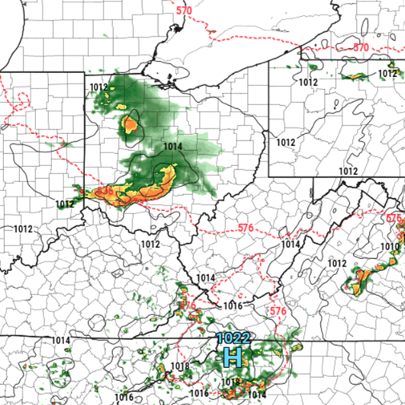
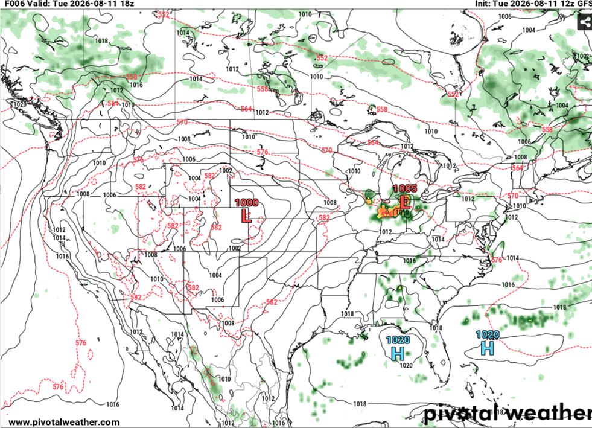
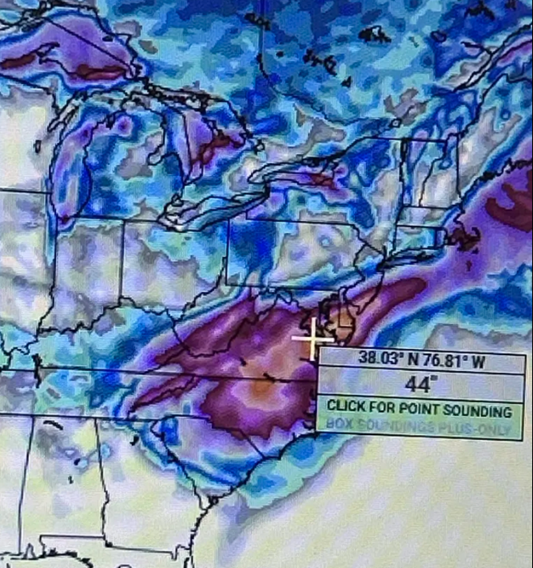

Weather Models
An overview of the computer models meteorologists use to forecast future conditions.

What Are The Different Weather Models?
Weather models are the heart and soul of modern meteorological technology. Weather models are mathematical models run on computers that allow us to process massive amounts of atmospheric data and produce forecasts that help predict what the weather may look like in the hours, days, or even weeks ahead. Historically, weather forecasting has been dominated by physics-based numerical weather prediction models, which use complex equations describing atmospheric physics along with current atmospheric conditions to generate forecasts. However, in recent years, AI-based weather models have become increasingly popular. These models use machine learning to learn patterns and relationships from massive amounts of historical weather data, allowing them to generate forecasts quickly and, in some cases, with accuracy comparable to the traditional physics-based models.
Weather models can be divided into different categories based on factors such as the area they cover, their resolution, and the type of forecasting they are designed to perform. Click a category below to learn more.
Global models provide forecasts for the entire world. Because they cover the entire planet, they generally use a coarser grid and provide lower resolution forecasts. However, their global coverage allows them to simulate large-scale atmospheric patterns and provide useful forecasts several days into the future, making them particularly valuable for medium and long-range forecasting.
Popular Examples: GFS (American Model), ECMWF (European Model), AIGFS (AI-based American Model counterpart), AIFS (AI-based European Model counterpart), CMC (Canadian Model)
Regional models cover a specific part of the world at higher resolution. These models are often valuable in the short-to-medium range.
Examples: NAM (North American Model), RGEM (Regional Canadian Model)
CAMs are regional models run at very high resolution (often around 1–4 km) so they can explicitly simulate individual thunderstorms and other small-scale events. These models are generally used to predict in the very short range (1–2 days in advance).
Examples: HRRR (High-Resolution Rapid Refresh – a widely used, rapidly updating CAM developed by NOAA), RRFS (Rapid Refresh Forecast System – NOAA's newer next-generation, rapidly updating, high-resolution weather modeling system)
Common Models Used by Meteorologists

Meteorologists use a variety of models to create a complete forecast. For those new to meteorology, the sheer number of available models can be overwhelming. Two of the most widely known and used are the ECMWF and GFS models. The ECMWF, maintained by the European Centre for Medium-Range Weather Forecasts, has long been regarded as one of the world's most accurate weather models. The GFS, maintained by the U.S. National Weather Service (NWS), has undergone numerous updates and has closely followed the ECMWF in accuracy and use. Both models also have AI-based counterparts, AIFS and AIGFS, which have entered operational use in recent years.
Model Accuracy

Weather models generally become less accurate as the forecast period increases due to the inherent uncertainty in predicting the atmosphere. In longer-range forecasts, individual model runs can vary significantly from one run to the next. Because of this, meteorologists often rely more heavily on ensemble guidance and examine broader model patterns and trends rather than basing forecasts directly on individual model runs. Weather models are also infamous for producing "fantasy storms," particularly in the longer range. These are storms that appear in model forecasts a week or more in advance but shift, or disappear entirely as subsequent model runs incorporate new data.
Because of this, meteorologists generally avoid treating long-range storms as reliable forecasts until the signal becomes more consistent across multiple model runs and ensemble members.
How to View Weather Models
For beginners who are just getting into meteorology, I recommend using Tropical Tidbits to view numerical weather model data. Tropical Tidbits provides a user-friendly interface that makes it easy to access and interpret common weather model products. However, its selection of model parameters and datasets is somewhat more limited than some advanced forecasting platforms. For users who want to explore more detailed model data, I recommend Pivotal Weather, which provides a much wider variety of model fields, parameters, and forecasting products.
Test Your Knowledge
See how well you understood the difference between Global, Regional, and Convection-Allowing Models.